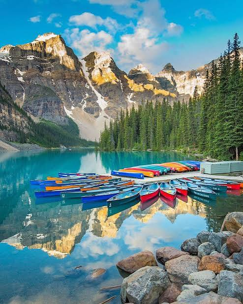
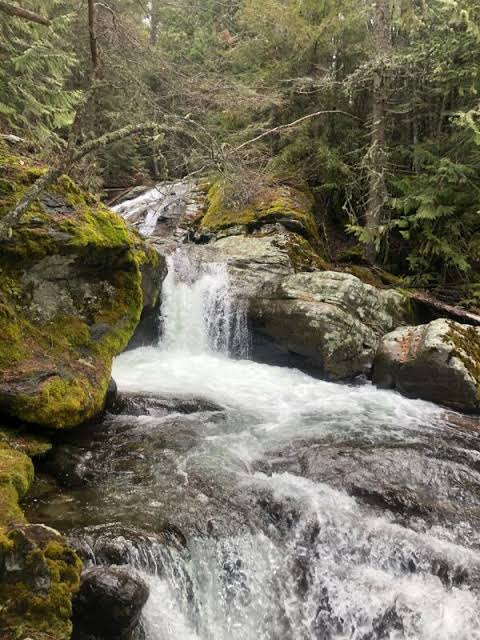
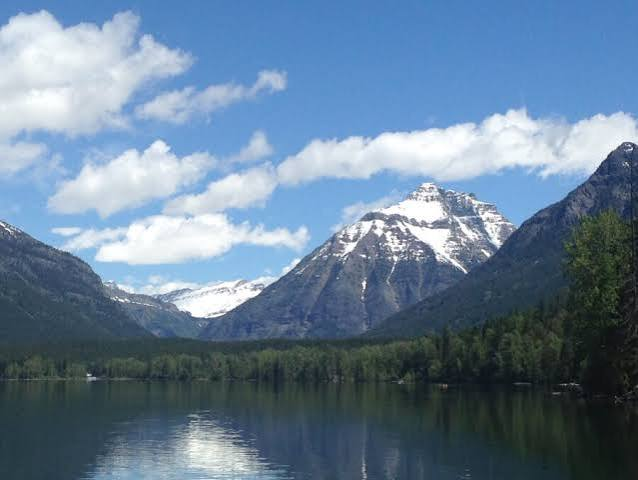
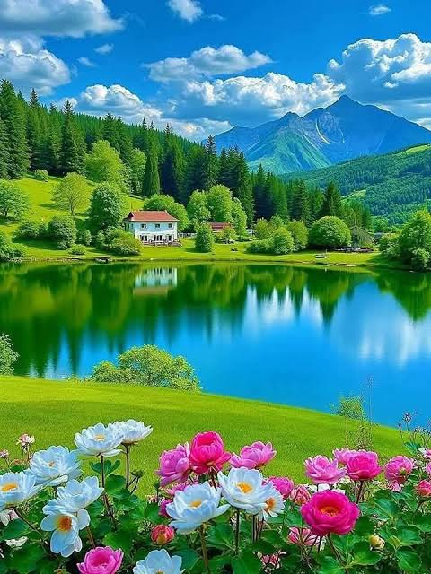
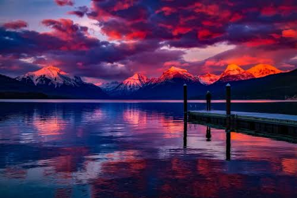

A visual diary of earth’s quiet whispers and grand landscapes.

Alpine Lakes & Mountains: Crystal-clear glacial water reflecting towering snow-capped peaks,
pine forests, and rocky shorelines (such as Moraine Lake or the Dolomites)

Waterfalls & Rivers: Cascading water tumbling down mossy rock faces or flowing through narrow,
mist-filled forested valleys

A large natural landform that rises significantly above its surrounding terrain, typically
featuring steep slopes, a confined summit area, and a distinct peak

A residential property built along the shoreline of a lake, serving as a permanent home, a
weekend retreat, or a short-term rental.

Rare natural bodies of water that get their vibrant color from a combination of high salinity,
specific microorganisms, or unique mineral deposits